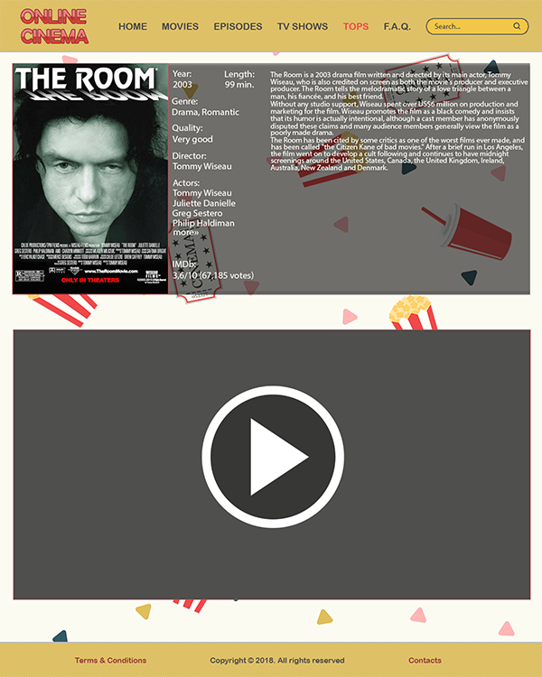

For the Visual Skills web design assignment I design online cinema movie streaming website or in other words, three different pages of it, because that was the requirement for the assignment. The idea was as simple as it sounds - design an online movie and tv shows watching website design. It seemed pretty easy in my mind and overall, that was the best idea that I could come up at that time.
The whole designing process for me took maybe 2 or 3 days. Even though this was supposed to be working bit by bit, my procrastinating and bad time managment made it so that it was designed in a couple of sitdowns. I could say that it was a little rushed job, but it still turned out pretty well. Since the design idea was pretty simple, the whole work didn't create any big difficulties. Movie posters and covers take up a lot of the space in these screens, as it should be in an online cinema webpage, and this only required finding right pictures, putting them in their place and, for covers, aligning their sizes. Besides that, most of the design is masic shapes, text other similar simple things. Background is just a blank page with triangles and drawings of popcorn, drinks and movie tickets spread all around.
Overall I stay that this was pretty interesting and fun experience. This was probably my most liked course of the first module. It wasn't really hard for me since I used to fiddle around photoshop when I was younger and I would still use it for photo editing every now and then. Though I never designed a web design from the ground, I had some experience of this, since I would edit some of those way back, just out of plain curiosity. I would also make other things banners for some online games that I played which in some ways is still similar.
